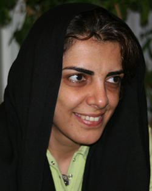

پذيرش > سایت نوشته ها > جنبش زنان در خيابان/پروين اردلان


 جنبش زنان در خيابان/پروين اردلان جنبش زنان در خيابان/پروين اردلان
18 اردیبهشت 1386 - - نسخه قابل چاپ
سال ۱۳۸۵ با همه تنشها و ناملايماتي که با خود داشت در عين حال سالي پرشور و انرژي بخش برايمان بود. سالي که نرخ رشد جنبش زنان تصاعدي بالا رفت و انفجار جنبش را نويد داد. سالي که در ۲۲ خردادش نيروهاي بسياري از جنبش دانشجويي و جنبش سنديکايي، جنبش زنان را حمايت کردند، کتک خوردند، زنداني شدند و اکنون بسياريشان از اعضاي فعال جنبش زنان هستند. سالي که کمپين يک ميليون امضا براي تغيير قوانين تبعيض آميز متولد شد و نه تنها بر فعاليت ما، که بر زندگي همه ما تاثير گذاشت.
براي ما فعالان اجتماعي که سياستهاي خياباني را امري فرهنگي و تاثير گذار بر ذهنها وچشمها مي دانيم، سال گذشته نيز خالي از پيامد و بي توشه از تجربه در اين عرصه نبود. در واقع فعاليتهاي جمعي ما با ديگر اقشار و جنبشها - و نه الزاما گروههاي زنان - از حيطه يک گروه يا دو گروه فرا روي کرد و در گسترهاي به پهناي کمپين يک ميليون امضا، فضاي سرد و وهم آلود پيرامونمان را سبز و رنگين کرد.
سياستهاي خياباني غالب بر فعاليتهاي جنبش زنان
سه اقدام جمعي و گسترش يابنده طي يک سال اخير (بزرگداشت ۸ مارس ۱۳۸۴ در پارک دانشجو، تجمع مسالمت آميز ۲۲ خرداد ۱۳۸۵ در ميدان هفت تير، و آغاز بکار کمپين يک ميليون امضا براي تغيير قوانين تبعيض آميز)، نه تنها شناخت و درک ما را از جامعه مردسالار با ساختارهاي متصلبش ملموس تر و عميق تر کرد، و شيوههاي مبارزاتي مان را همگام با نظرياتي که از دل اين مبارزه پردامنه خلق مي شوند براي کسب حقوق برابر ارتقا داد، بلکه هريک از اين وقايع بر نگاه، روش و عملکرد مان نسبت به سياستهاي خياباني، سازماندهي و هزينه پردازي و نحوه همکاري با گروهها پر تاثير بود.
طي چند سال اخير به ويژه از زمان شکل گيري جمع «همانديشي زنان» که با انتخاب شيرين عبادي به عنوان برنده نوبل صلح محمل و سببي براي گرد آمدن گروهها و فعالان جنبش زنان شد، در بين فعالان و گروههاي جنبش زنان که به کارجمعي و کاربست سياستهاي خياباني براي تاثير گذاري بر فرهنگ عمومي جامعه معتقد بودند دو گرايش قوي وجود داشت، يک گرايش که از منظر نگرش، نگاه خوش بينانهاي به کار با همه گروهها نداشت گاه به دنبال يافتن گروههاي همفکر و نه به الزام هم روش بود. گرايش ديگر که از منظر روش در پي گسترش دامنه فعاليت با گروههاي ديگر به ويژه در فعاليتهاي اعتراضي مسالمت آميز براي تاثير گذاري بر فرهنگ عمومي جامعه بود. به قطع شرايط سياسي و اجتماعي حاکم نيز در تعديل يا تقويت هريک از اين دو گرايش سهيم بود. به عنوان مثال تجمع اعتراض آميز ۲۲ خرداد ۱۳۸۴ که در فرصتي مناسب يعني فاصله جابه جايي دو دولت از دل هم انديشي فعالان جنبش زنان در آمد و اوج همگرايي و ائتلاف جنبش زنان در مطالبات حداکثري يعني تغيير قانون اساسي را به نمايش گذاشت، به تقويت هر دو گرايش کمک کرد، به ما آموخت که براي فعاليتهاي مسالمت آميز مدني، کار با ديگر گروهها، همگرايي در مطالبه و در روش، جنبش زنان را توانمند و قدرتمند مي کند.
آموختيم که با تاکيد بر اشتراکاتمان مي توانيم سياستهاي خياباني در فعاليتهاي جمعي را پيش ببريم. و همين زمينههاي فکري و عملي بود که تجربه جمعي بزرگداشت ۸ مارس۱۳۸۴ را ميسرکرد.
۸ مارس ۱۳۸۴: تداوم همگرايي در جنبش زنان
جدا از جمع هم انديشي زنان، از ۸ مارس ۱۳۸۳ نيز جمع ديگري متشکل از افراد فعال در جنبش زنان شکل گرفت تا همگام با زنان سراسر دنيا در تهيه چهل تکه همبستگي زنان، خواستههاي تدوين شده منشور جهاني زنان را مطالبه کنند، همين حرکت جمع ديگري را به نام «هواداران حرکت جهاني زنان» به وجود آورد. ائتلاف بزرگ ۲۲ خرداد ۱۳۸۴ نقطه پرشي شد براي ائتلافهاي بزرگ تر يعني حول جمع هم انديشي زنان و جمع هواداران حرکت جهاني در پارک دانشجو.
پس از به قدرت رسيدن دولت محافظه کار، با آنکه شرايط بر زنان سخت تر از گذشته شدهبود، گروههاي زنان مصمم بودند که به رغم ترس و واهمه از فضاي نظاميگر گسترشيابنده، روز جهاني زن را در عرصه عمومي و در برابر نگاه مردمان گرامي بدارند. تجربه ۲۲ خرداد ۱۳۸۴ هم که تجربه پيروز بخشي براي جنبش زنان بود ميل به تکرار اين تجربه و قدرت نمايي جنبش زنان براي کسب مطالبات جنبش را بيشتر کردهبود، به عبارت ديگر شجاعتر شدهبوديم. هم جمع حرکتهاي جهاني زنان در تکاپوي برگزاري تجمع بود و پيش تر تجربياتي در سازماندهي تجمعاتي کوچک در روزهاي جهاني فقر و خشونت عليه زنان داشت و هم فعالان جمع هم انديشي زنان که تجربه ۲۲ خرداد را از سر گذراندهبودند. برخي به برگزاري برنامههاي مشترک و برخي به برگزاري برنامههاي مجزا اصرار داشتند نتيجه آنکه تصميم بر برگزاري برنامهاي مشترک از سوي دو جمع هم انديشي و هواداران حرکت جهاني زنان در پارک دانشجو گرفته شد و با ائتلاف اين دو جمع، دو روز پيش از برگزاري اين گردهمايي، فراخوان آن در سايتها منتشرشد.
اتخاذ تصميم در شرايط پرفشار و اعلام فراخوان گردهمايي ۸ مارس ازسوي دو جمع هم انديشي و هواداران حرکت جهاني زنان، هم ايجاد امنيت کرد و هم بي پيامد نبود. از يک سو همه گروههاي ثبت شده و ثبت نشده در دل جمعهاي بزرگ جاي مي گرفتند، و بدين ترتيب هزينه پردازي ديگر بر دوش گروههاي ثبت شده قرار نمي گرفت (بعد از ۲۲ خرداد ۱۳۸۴ برخي از فعالان گروههايي که نامشان در فراخوان تجمع ۲۲ خرداد در برابر دانشگاه تهران ذکر شده بود، از جمله برخي از اعضاي مرکز فرهنگي زنان به دادگاه احضار شده بودند)، از سوي ديگر به هرکدام ازاين دو جمع، هويتي سازماني مي بخشيد و خطر متولي گري در اين جمعها را گوشزد مي کرد، به هرحال تصميمي خردمندانه براي کاهش هزينهها در گراميداشت روزجهاني زن بود.
با ائتلاف اين دو جمع گرچه گردهمايي ۸ مارس برگزار شد، اما ناهماهنگي کميته برگزار کننده تجمع از يکسو و خشونت بي حد پليس در ضرب وشتم زنان و مردان که در صدد ممانعت از برگزاري گردهمايي بود، و حتي سيمين بهبهاني بانوي جنبش زنان را در امان نگذاشت و روز جهاني زن را به روز کتک زدن زنان توسط پليس تبديل کرد.
تجربه ۸ مارس بر اتخاذ تصميم در اعتراضات مسالمت آميز بعدي نيز تاثير گذار شد. اعمال خشونت بي حدو اندازه در برابر يک حق قانوني يعني گردهمايي مسالمتآميز حاوي يک پيام و يک نشانه بود، يک پيام براي فعالان جنبش زنان مبني بر اين که ديگر تجمعات زنان را تحمل نمي کنيم، و يک نشانه از اينکه موقعيت زنان در جامعه مردسالار ما از «ضعيفه» به «شهروند بي حقوق» ارتقا پيدا کرده است. اين پيام و نشانه هم فعال کننده و هم بازدارنده بود و بر حرکتهاي اعتراضي بعدي و واگرايي بين گروهها تاثير گذاشت.
اين تجربه اما راهگشاي تجربه ديگري براي فعالان جنبش زنان شد. با برخي از زنان شرکتکننده در تجمع ۸ مارس با وکالت شيرين عبادي به دليل ضرب و شتم پليس از نيروي انتظامي شکايت کرديم. گرچه اين شکايت راه به جايي نبرد اما تجربه آغازيني براي زنان بود که نه در مقام «خوانده» که در مقام «خواهان» وارد پروسههاي قانوني براي شکايت از حافظان امنيت شده و مسئولان را به رعايت حقوق شهروندي زنان وابدارند. البته اختلاف نظر دراين مورد نيز از منظر نگرش (شکايتکردن يا نکردن) و روش (نحوه شکايت و انتخاب وکيل) اختلافات موجود را بيشتر کرد.
تجمع هفت تير: واگرايي در جنبش زنان و همگرايي جنبشها
با آنکه تجمع اعتراضي ۲۲ خرداد نقطه همگرايي گروهها و فعالان جنبش زنان بود و در ۸ مارس هم اين همگرايي تاحدودي حفظ شد، اما به تدريج اختلافها هم درنگرش و هم در روش پديدار شد. بروز اختلاف نظر، حتي پيش از ۸ مارس ۱۳۸۴، در دو مقطع يکي بر سر سازماندهي هم انديشي و سپس در روش مطالبهخواهي در نهايت به خروج برخي از فعالان جنبش زنان از جمع هم انديشي آن هم در آستانه تجمع اعتراضي ۲۲ خرداد ۱۳۸۵ منجر شد.
آزمون و خطاي جنبشي
۲۲ خرداد از دل همانديشي در آمده بود، فورومي که امکان گفتگو و طرح ونظر را فراهم ميکرد، ورود و خروج به آن آزاد بود و در نهايت مي توانست به ائتلافي جمعي از گروهها و فعالان جنبش زنان براي حرکتي جمعي چون ۲۲ خرداد ختم شود، فروکش کند و ائتلافي ديگر را به پشتوانه بحث ونظر جمعي در حوزهاي ديگرشکل دهد. اما پس از ۲۲ خرداد، حس متولي گري در بسياريمان چنان قوي شدهبود که برخي ترجيح دادند براي جمع همانديشي حتي ساختار تعيين کنند، مدل سازي کنند، قوانين برايش بگذارند، ورود و خروج افراد را کنترل کنند، از هژموني افراد يا گروهها بکاهند، حتي به بهاي حذف نسل جوانمان از تصميم گيريها، يعني به جاي پذيرش انتقاد منتقدان جوانمان به حذف آنان اقدام کنند خطري که هميشه جنبشها را تهديد ميکند و حرکتها را از حوزه جنبشياش به متوليگري و سازماني شدن و در واقع ضدجنبشي شدن سوق ميدهد.
علاوه بر اين، حضور جوانان را به رغم آنکه همواره بار اصلي کار را بردوش مي کشيدند، هنوز باور نداشتيم، ۲۲ خرداد همان قدر که نسلهاي قديم تر را انرژي بخشيده بود، نسل جوانمان را هم گرچه با تعداد اندک علاقهمند و فعال در اين حوزه ساخته بود. بدين ترتيب برخي از جوانهايمان در همانديشي، با نقد به روش حذفي قديميترها،حق خودشان را مطالبه کردند، و به حق هم درست مي گفتند گرچه برخي تاب نياوردند. آن موقع دريافتيم که در اقدامات جمعي، مرزهاي خطا چقدر باريک و اخلاق فمينيستي چقدرشکننده است. به هر حال زماني که امکان بحث متوقف ميشود براي کاهش تنشها لازم است که طرفين اختلاف از جمع فاصله بگيرند تا تماميت جمع به خطر نيافتد. هرچند اختلاف نظرها ضربه خود را بر جنبش زنان نيز وارد کرد.
مقطع دوم در بهار ۱۳۸۵ و به ويژه براي همفکري در تدارک برگزاري برنامهاي در ۲۲ خرداد ۱۳۸۵ اتفاق افتاد. زيرا همانديشي ما زنان در جلسات همانديشي بود که ۲۲ خرداد سال قبل را پديد آورده بود و بهقاعده طرح اين موضوع نخست در جمع همانديشي ضروري بود.
اما با توجه به شرايط بستهتري که با دولت مهرورزي پديد آمده بود و با توجه به سابقه خشونتآميز ۸ مارس در پارك دانشجو، رسيدن به اتفاق نظر بسيار دشوار شدهبود. مطالبه تغيير قانون اساسي (مانند ۲۲ خرداد ۱۳۸۴) بهعنوان يک مطالبه حداکثري خطرناک بود، علاوه بر اين قوانين مدني عيني و ملموس تر بودند. بنابراين پيشنهاد برخي از ما برگزاري تجمع با تمرکز بر قوانين مدني يعني مطالبات حداقلي بود. اما توافق ممکن نشد. زيرا مطالباتمان مشترک اما روشهايمان متفاوت بود.
در واقع اختلاف بر سر «روش» مطالبهخواهي بود: برخي صدور بيانيه را کافي مي دانستند، برخي بر بزرگداشت مراسمي در فضاي سربسته تاکيد داشتند، ما هم که طيفي از اين جمع بوديم به برگزاري تجمع مسالمتآميز و خياباني نظر داشتيم. بيشترين نگراني مخالفان ازهزينه پردازي بود. مخالفان معتقد بودند که روش خياباني و مسالمتآميز ما «انقلابي» است وبا سرکوب مواجه ميشود و در نتيجه اگر فعاليت زنان را بهطور كلي از بين نبرند حداقل بسيار محدود مي کنند، ولي ما براين باور بوديم که همه جنبشها براي پيشبرد اهدافشان بايد ظرفيت هزينه پردازيشان را بالا ببرند و فرصتها را از دست ندهند، به طور مثال اگر ۲۲ خرداد ۱۳۸۴ فرصتي بود براي ما که در فضاي خاص انتخاباتي که فشار برمردم کمتر است، صداي اعتراضمان را به قوانين تبعيضآميز بلند کنيم. اينک روز ۲۲ خرداد ۸۵ نيز فرصتي دست داده تا به رسم گراميداشت آن روز، اعتراض به قوانين را در تاريخ خود ثبت و ماندگار سازيم، و مطالبهخواهي را پيگير باشيم و گرنه تقليل يک تجمع اعتراضي گسترده به انتشار يک اطلاعيه يا فراخوان، آن هم در اولين سالگرد اين واقعه تاريخي، به معني مرگ اين روز تاريخي است. مگر روز جهاني زن نيز با همين فشارها و هزينهپردازيها ثبت و پذيرفته نشد؟ کدام جنبش را سراغ داريد که خواستههايش پشت درهاي بسته و بدون پرداخت هزينه محقق شده باشد؟
بدين ترتيب اکثريت جمع همانديشي که اکنون هويتي سازماني و البته غيررسمي يافته بود به خواستهي برگزاري تجمع صلحآميز، راي مثبت نداد. چنين بود كه گروهها و فعالان همفکر و هم روش در دوطيف عمده قرار گرفتند و آنان که مدافع تجمع خياباني بودند و اندک تر، عزم خود را براي برگزاري تجمع جزم کردند.
اين تجربه نشان داد که براي اقدام به عمل در عرصه اعتراضات مسالمتآميز مدني، علاوه بر اشتراک در روش، درک موقعيت مشترک و آمادگي براي هزينهپردازي در جنبش زنان هم ضروري است، وگرنه اين خطر که منافع جنبش را فداي مصالح خود کنيم همواره تهديدي جدي خواهد ماند.
اين تجربه، بركات ديگري هم داشت كه مهمترين آن، همبستگي كمسابقهي فعالان جنبش سنديکايي شرکت واحد با جنبش زنان بود. فعالان جنبش سنديکايي از ۲۲ خرداد ۱۳۸۴ حامي جنبش زنان بودند، همانها بودند که با اتوبوسهاي خود حلقه اول تجمع را روبه روي دانشگاه بردند و هزينهي آن را هم پرداختند، همسران همان فعالان سنديکايي نيز با وجودي که شوهرانشان در زندان بودند در تجمع ۲۲ خرداد ۱۳۸۵ فعالانه شرکت کردند و حتي دستگير هم شدند.
به هرحال، در کنار اختلافات موجود در جمع همانديشي که منجر به تشکيل دو طيف موافق و مخالف درمورد تجمعات مسالمت آميز شد، جمع هواداران حرکت جهاني زنان نيز با برگزاري تجمع صلحآميز موافق نبود. اين بار مشكل بر سر مطالبات بود. آنان مطالبات حقوقي را مطالباتي «ليبرالي» دانستند، حال آنکه طرح مطالبات و روش مطالبه آنها در بستري اجتماعي رخ ميدهند و نه در دنيايي انتزاعي، و مفاهيم در همين بستر و متناسب با شرايط و موقعيتها است که معني ميشوند. خواستهاي که ممکن است در شرايطي ليبرالي باشد در موقعيتي ديگر راديکالي معني مي شود، در شرايطي که بسياري از حقوق اوليه ما چون حق ازدواج، طلاق، منع چند همسري... ناديده گرفته مي شود، تجمع اعتراضي براي نقض همين مطالبات ليبرالي به مراتب اقدامي راديکال تلقي ميشود.
جدا از اين مسئله حتي اگر اين مطالبات هم ليبرالي باشد و ليبرال بودن هم نکوهيده و ناپسند، بايد اين مطالبات را به کنار بگذاريم و براي متهم نشدن به ليبرال بودن خود را منزه کرده و آلوده اين مفاهيم نسازيم؟ و بي عملي را بر عمل برتري بخشيم؟ در هر حال مانند جمع همانديشي زنان، اين جمع نيز در کليت خود و با نام هواداران حرکت جهاني زنان، به تجمع اعتراضي در ميدان هفت تير پاسخ منفي داد.
اين تجربه هم آموزههاي زيادي برايمان داشت، اگر جمع همانديشي زنان و يا هواداران جهاني زنان آغازي براي نشستهاي جمعي ما و آشنايي ما با يکديگر بود اکنون به بلوغي رسيده بوديم که بايد حول مطالبات مشترکمان به دنبال گروههاي هم روش برويم و اصراري براي کار با يکديگر نداشته باشيم، چون به همان نسبت مانع ازفعاليت يکديگر مي شويم. اما در مواقع ضروري يا هم پوشاني فعاليتهايمان بر يکديگر حامي يک ديگر باشيم و در مشترکات ائتلاف کنيم. يعني تز «همه با هم» تنها در صورتي کارآمد خواهد بود که اختلافات ما حداقلي باشد.
مشروعيت فردي و اقبال جمعي
به هر حال، در نهايت جمعي از فعالان دو جمع موافق برگزاري تجمع شديم، در موقعيتي حساس قرار داشتيم، اگر پيش از اين مي انديشيديم که افراد تحت لواي گروههاي خود امنيت بيشتري دارند اينک بيشترمان منفرد بوديم و شناخته شده در جنبش زنان، و علاوه براين اگر به طور فردي و نه گروهي وارد عمل مي شديم هزينه گروهها را کاهش مي داديم و فزون بر آن اگر پيشتر هويت جمعي مان را از گروه خود مي گرفتيم و گروه براي ما مشروعيت يا حتي ممنوعيت ايجاد مي کرد، اين بار در پروسه عمل و بر اساس انتخابهاي فردي مان شرکت کرده بوديم، درواقع اين حرکت فراروي ما را از چارچوبهاي گروهي حتي به رغم موافقت گروه ميسر کرد، مشروعيت فردي و آمادگي براي هزينه پردازي سبب شد که بيشتر حاميان حرکت نيز فعالان جنبش دانشجويي، فعالان جنبش سنديکايي، حقوقدانان، روزنامه نگاران، وبلاگ نويسان، فعالان مستقل اجتماعي، نويسندگان، فعالان حقوق بشري ...باشند، حرکتي کاملا مستقل، و آگاه به پيامدها، و آمادهي هزينه پردازي ــ و نه شهيد سازي از خود ــ که با نام بيش از دوهزار نفر زير فراخوان، مشروعيت آن تاييد و تثبيت شد.
تجمع مسالمت آميز ميدان هفت تير به رغم صدمات ناشي از کتک زدنها، به رغم دستگيري و بازجوييها تجربه هزينه پردازي در جنبش زنان را چون ساير جنبشها عينيت بخشيد و به رغم تلاش زياد براي تخريب اين حرکت، دوستان و ياران بسياري را در اوج واگرايي جنبش زنان براي مطالبات حداقلي، به جمع جنبش زنان افزود، همراهاني که چندي بعد از اعضاي ثابت کمپين يک ميليون امضا براي تغيير قوانين تبعيض آميز شدند.
در واقع تجمع ميدان هفت تير نشان داد که تجمع کنندگان پيام ۸ مارس را فراموش نکرده اند، اما آگاهانه به ميدان آمده اند. آمده اند تا هم خودشان و هم مطالباتشان ديده شوند، و در عين حال آمده اند تا جنبشها را به حمايت فرا بخوانند. تجمع هفت تير آغازي بود براي همگرايي جنبشهاي زنان، دانشجويان و سنديکاها با يکديگر براي مطالبات عدالتخواهانه در يک تجربه جمعي ناب. تجربهاي دشوار و پردلهره اما با نتايجي دراز دامنه و تاثيرگذار.
کمپين يک ميليون امضا: حضور حداکثري براي مطالبات حداقلي
کار کردن در فضايي کم تحمل نيازمند جستجوي استراتژيهاي گوناگون و خلق روشهاي نو و متفاوت براي تداوم کار است و همين امر موجب مي شود که در موقعيتهاي گوناگون راهکارها و وروشهاي گوناگون را به کار بگيريم.
گرچه تجمع مسالمت آميز ۲۲ خرداد ۱۳۸۵ در اعتراض به قوانين زن ستيز متاسفانه به خشونت، دستگيري و بازجويي و دادگاه کشيده شد، اما ثمرهاي شيرين داشت. تجربه فعالان زن مراکش به ما ياد داد که مبارزه وخواسته مان براي تغيير را محدود به يک روز و دو روز نکنيم، چه حتي در ۲۲ خرداد فرصتي براي طرح مطالباتمان نيافتيم، ازاين رو مصمم شديم با آگاهي رساني پيوسته، خواستههايمان را عموميت بخشيم و علاوه بر اين سياستي خياباني را در حداقلي ترين، اما عمومي ترين شکل آن جستجو کنيم. يعني از روش کوتاه نياييم اما شکل آن را تغيير دهيم.
اين بار جمعي ديگر حول خواستهاي مشترک شکل گرفت تا مطالبات حقوقي خود را در پروسهاي جمعي در مقطعي دوساله و جغرافيايي نامحدود پيش ببرد. در واقع اگر قبلا کار جمعي را تنها در يک گروه يا يک جمع تجربه کرده بوديم، از ۲۲ خرداد ۱۳۸۵، با هويت جنبشي مان در هريک از جنبشهاي اجتماعي، هويت جمعي مان را در ميدان هفت تير عينيت بخشيديم.
در ادامه اين روند به بررسي نقاط قوت و ضعف و چرايي حمايت يا عدم حمايت تجمع ۲۲ خرداد پرداختيم در نهايت با کمپين يک ميليون امضا اعضاي شبکهاي سيال و غيرمتمرکز در کمپين شديم و به قدرت جمعي مان ايمان آورديم. اکنون کمپين يک ميليون امضا، نقطه تلاقي دو گرايش موجود در جنبش زنان هم شده است. امکاني که هم در روش و هم در مطالبه، تکثر و تنوع را در خود جاي مي دهد و در عين حال اختلافات روشي و نگرشي را به حداقل مي رساند. علاوه بر اين، برخلاف ديگر جمعهاي پيشين، بدنه اصلي آن را نسل جوان تشکيل مي دهد، نسلي که شور دگرگوني و ساختن دارد، و با کسب تجربه آزاد و رها که خواسته ذاتي اين نسل است، کار جمعي را در حوزههاي گوناگون در کمپين تجربه مي کند و سرمايه اجتماعي عظيمي را بر جنبش زنان مي افزايد.
افراد نيز نه به عنوان نمايندگان يک ان جي او بلکه به مثابه اعضاي اين شبکه سيال اين امکان را مي يابند که در کمپين حضوري حداکثري براي مطالبات حداقلي يعني تغيير قوانين تبعيض آميز داشته باشند. مي توانند هم با دلبستگي و توان فردي و هم با دانش جمعي شان در اين کارزار حضور داشته باشند.
تجربه چندين ماهه (از شهريور ۱۳۸۵ تا کنون) نشان داد که در اين کارزار مدني به دليل نامتمرکز بودن ساختار، هر فرد ديگر نه نگران هزينه پردازي براي گروه است، نه نيازمند جلب مشارکت گروه است و نه عضويت فرد در گروه، منعي برايش ايجاد مي کند. براي پرداخت هزينه هم واهمهاي ندارد. اين کمپين بسيار گسترده و بزرگ است و به همان نسبت هم بار هزينه پردازي اش بر يک جا، يک فرد و يا يک گروه سنگيني نمي کند. با دستگيري يا فشار بر فرد يا افراد نيز حرکت متوقف نمي شود، چون اگر در جايي حركتش را مانع شوند درجاي ديگري جريان مييابد. به دليل روش «چهره به چهره» و ورودش به خانهها، حتي خانوادهها را آماده هزينه پردازي کرده است، هرچند خواسته و روش مطالبه اش کاملا مدني است.
بدين ترتيب از نيم سال دوم ۱۳۸۵، کمپين يک ميليون امضا فعالان جنبش زنان را در حيطهاي وسيع تر درگير کار جمعي کرد و به نوعي ما را به بلوغ جنبشي رساند. اگر شش ماهه اول سال ۱۳۸۵ روزهاي نااميدي و فشار و سرخوردگيمان از فضاي بسته سياسي و اجتماعي و همچنين منتقدان تخريب کننده بود، شش ماهه دوم سال را به يمن کارزار بزرگمان با شور ونشاط و اميد گذرانديم. اکنون اين کارزار افراد و گروهها را در ميدانهاي مغناطيسي بي متولي و متکثر حول يک بيانيه گرد مي آورد و فعال مي کند. در حال حاضر جدا از حمايتهاي جهاني زنان، نزديک به ۱۰۰ هزار نفر از مردم، چهرههاي هنري، فرهنگي و اجتماعي و سياسي و گروههاي گوناگون فارغ از تفکر ايدئولوژيک، اين بيانيه را امضا کرده اند.
کارزاري که با فعالان جنبش زنان و دانشجويي آغاز شد، اکنون با جذب افراد از قشرها و طبقات گوناگون، يا به عبارت ديگر فعالان کمپيني، گسترش مي يابد و علاوه بر اين جمعهاي گوناگون زنان را نيز حول خود متشکل مي کند. همچنين اعلام حمايت جمع همانديشي زنان و جمعي از زنان اصلاح طلب از اين حرکت نشان از آن دارد که اين شبکهي سيال، جمعهاي زنان از طيفهاي گوناگون را به تدريج جذب اين جنبش مي کند، کارزاري فارغ از تفکر و ساختارايدئولوژيک، که درون آن افراد و گروهها ايدئولوژي مستقل خود را دارند.
*این مطلب در شماره 5 نامه زن. خبرنامه داخلی مرکز فرهنگی زنان منتشر شده است
ارسال به
بالاترین
،
توییتر
،
فریندفید
،
فیسبوک
در همين بخش :
 یک خبر تلخ؟ یک قانونشکنی؟ یک تصمیم بخشنامهای جدید؟ یک خبر تلخ؟ یک قانونشکنی؟ یک تصمیم بخشنامهای جدید؟
چرا بایست به سکسوالیته پرداخت؟ / نفیسه آزاد
آزارجنسی خانگی؛ «قربانی» نه، «نجات یافته»
زنان، بزرگترین بازندگان بهار عرب
سانسور از دیدگاه جنسیتی/الهه امانی
ديگر بخش ها :
طرح یک میلیون امضا
|
مقالات
|
سایت نوشته ها
|
اخبار
|
گزارش كمپين
|
گفت و گو
|
علیه سکوت
|
كوچه به كوچه
|
نامه های شما
|
گزارش ویژه
|
گفتگو با اعضا
|
ویژه سالگرد کمپین
|
تصویر برابری
|
دل آرام علی
|
تریبون
|
مقالات
|
تاریخ شفاهی
|
خارج از چارچوب
|
کتابخانه
|
درباره کمپین
|
کمپین در شهرها
|
کمپین در بند
|
صدای تغییر
|
ویژه 22 خرداد
|
لایحه حمایت از خانواده
|
گالری
|
عشا مومنی
|
امیر یعقوبعلی
|
خدیجه مقدم
|
راحله عسگری زاده و نسیم خسروی
|
پروین اردلان،جلوه جواهری، مریم حسین خواه، ناهید کشاورز
|
زینب پیغمبرزاده
|
سعیده امین، سارا ایمانیان، محبوبه حسین زاده، ناهید کشاورز و همایون نامی
|
احترام شادفر
|
نسیم سرابندی زاده،فاطمه دهدشتی
|
وبلاگ مهمان
|
پرونده خرم آباد
|
دستگیری ها
|
مریم مالک
|
پرستو اللهیاری
|
مهرنوش اعتمادی
|
سمیه رشیدی
|
Other Languages
|
همراهان
|
«فراخوان کمپین ده روز با بهاره هدایت»
| English
|